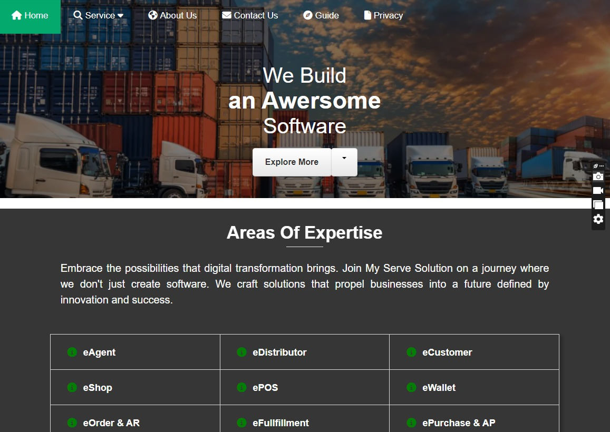

Warehouse System.
A clearer digital presentation of e-warehouse operations and services.
WAREHOUSE & LOGISTICS WEB04 supplied screenshotsFrontend & UI Design
FINAL INTERFACE SHOWCASEPresenting operational complexity with clarityScroll for the full screenshot collection ↓

01 / DESIGN CONTEXTProject at
Project at
a glance.
An interface and informational webpage showcase featuring warehouse service presentation, feature comparisons and logistics process visuals.
02 / SELECTED SCREENSExplore the
Explore the
interfaces.
The screenshots below are presented as final design / interface views. Select any image to inspect it at full size; use the arrow keys to navigate.
03 / VISUAL FOCUSWhat the
What the
screens show.
Four screens show the service landing view, feature list, e-warehouse diagram and supporting information sections.
Warehouse services landingFeatures comparisonOperational diagramsProcess overview
Selected UI sections only. The complete interfaces and internal details are not shown to respect company and client confidentiality.